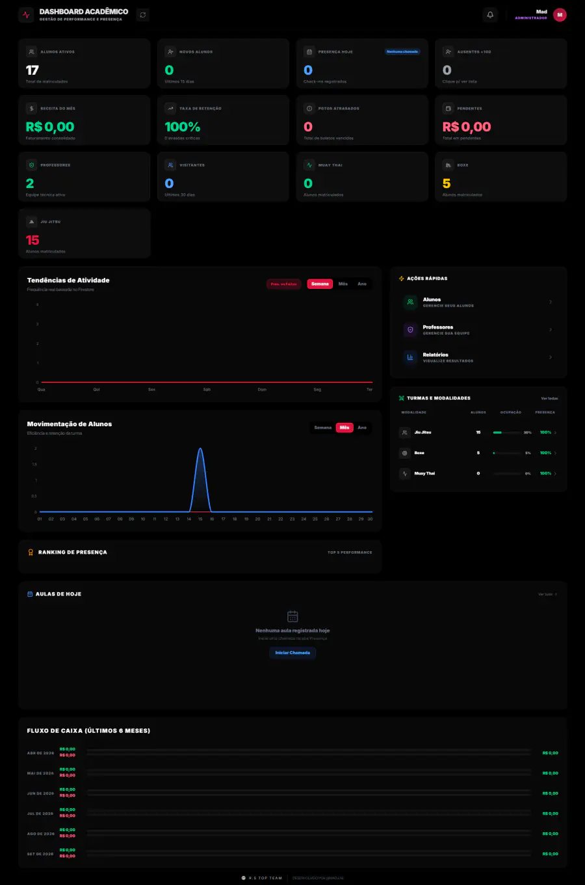

Desenvolvimento web
e design digital.
Sou desenvolvedor web em formação com foco em front-end e design gráfico. Crio sites, interfaces e sistemas funcionais, utilizando inteligência artificial como apoio técnico.

Projetos
selecionados.
Projetos desenvolvidos combinando front-end, lógica e design.
R.S. Top Team.
Sistema para gestão de alunos, turmas, presenças e finanças de uma academia. Defini os requisitos, criei as telas e usei IA como apoio para implementar em React e Firebase.
Conhecer o projeto
R.S. Top Team
Sistema de gestão · React e Firebase (apoio de IA)
Organiza alunos, turmas, presenças e finanças da academia. Defini requisitos e telas, testei e refinei o sistema feito em sua maior parte com apoio de IA.
MHouse Fit
Site institucional · HTML, CSS e JavaScript
Site que desenvolvi para apresentar os serviços e a estrutura de uma academia, com navegação responsiva e código sem dependências de frameworks.
Instagram DM Downloader
JavaScript · Extensão
Extensão que criei para baixar fotos e vídeos direto das conversas do Instagram Web com um clique, sem enviar dados para fora do navegador.
Atlas Gestão
Desenvolvimento Web · SaaS (apoio de IA)
Plataforma multi-tenant com isolamento de dados por organização. Estruturei os fluxos e regras, implementando com auxílio de IA em React e Firestore.
Desenvolvimento web
e design gráfico.
Madson Vander,
em formação front-end
em Marituba, PA.
Sou desenvolvedor web em formação, com foco em front-end e design gráfico. Moro em Marituba, PA, e desenvolvo interfaces com HTML, CSS e JavaScript básico.
Utilizo inteligência artificial no dia a dia como suporte técnico para acelerar a implementação dos meus projetos. No sistema de gestão com React e Firebase, por exemplo, defini todos os requisitos, telas e regras de negócio, testando e ajustando a aplicação enquanto continuo aprendendo essas tecnologias.
Busco oportunidades como desenvolvedor júnior para somar no time e continuar evoluindo na prática.